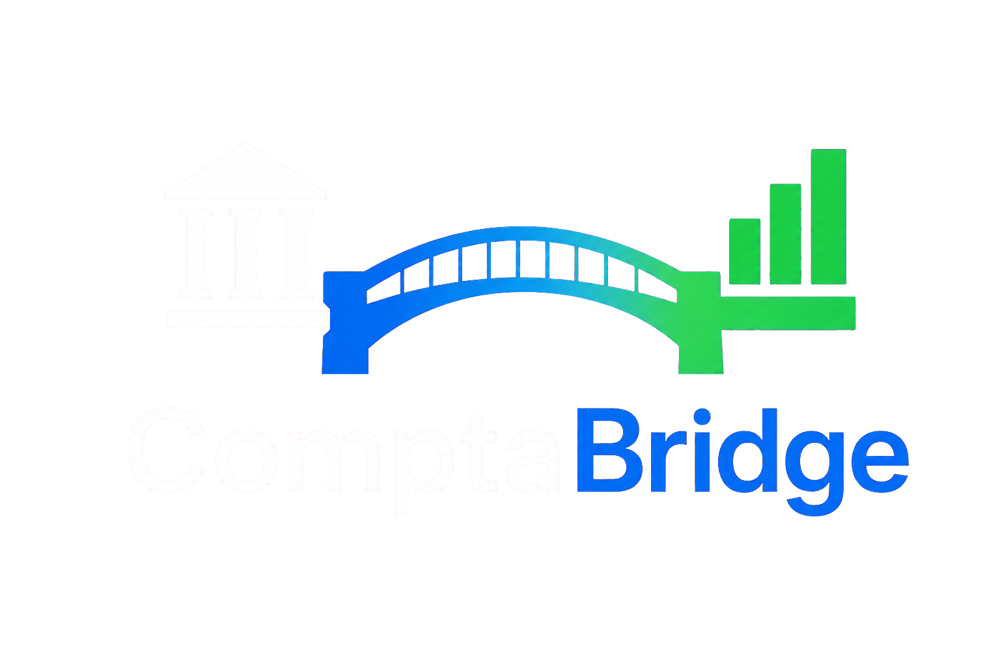

Déposez vos documents
PDF, factures numérisées, reçus et tickets de caisse pourront être traités par lots.

Nous préparons un extracteur capable de lire les factures, reçus et tickets de caisse pour récupérer automatiquement les informations utiles à la comptabilité.
Une première version pensée pour les indépendants et les cabinets comptables.
Le module sera conçu avec la même priorité : garder l'utilisateur maître de ce qui est extrait et exporté.
PDF, factures numérisées, reçus et tickets de caisse pourront être traités par lots.
Fournisseur, date, montant, TVA et type de document seront présentés pour vérification.
Les informations validées pourront être préparées pour votre logiciel comptable.
Comme pour les relevés bancaires, l'objectif est de traiter les factures localement. Aucun document comptable ne sera envoyé vers un serveur sans action explicite de l'utilisateur.